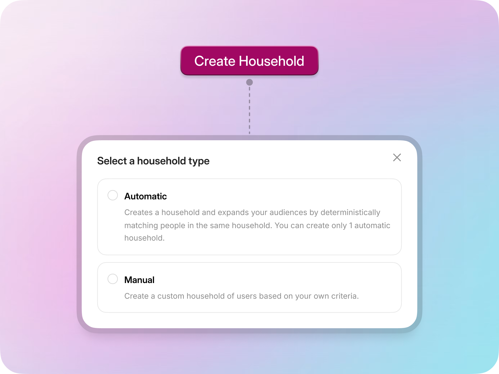
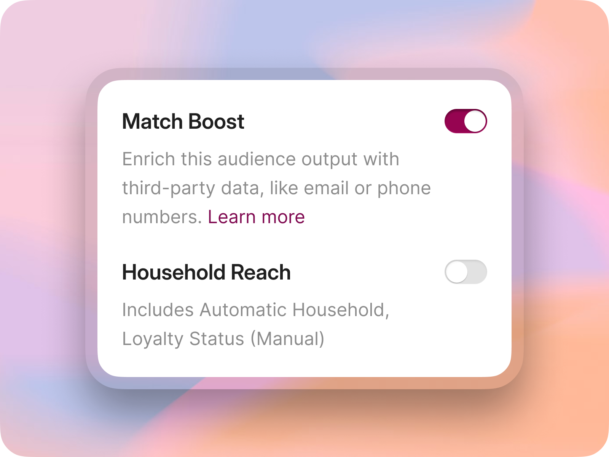
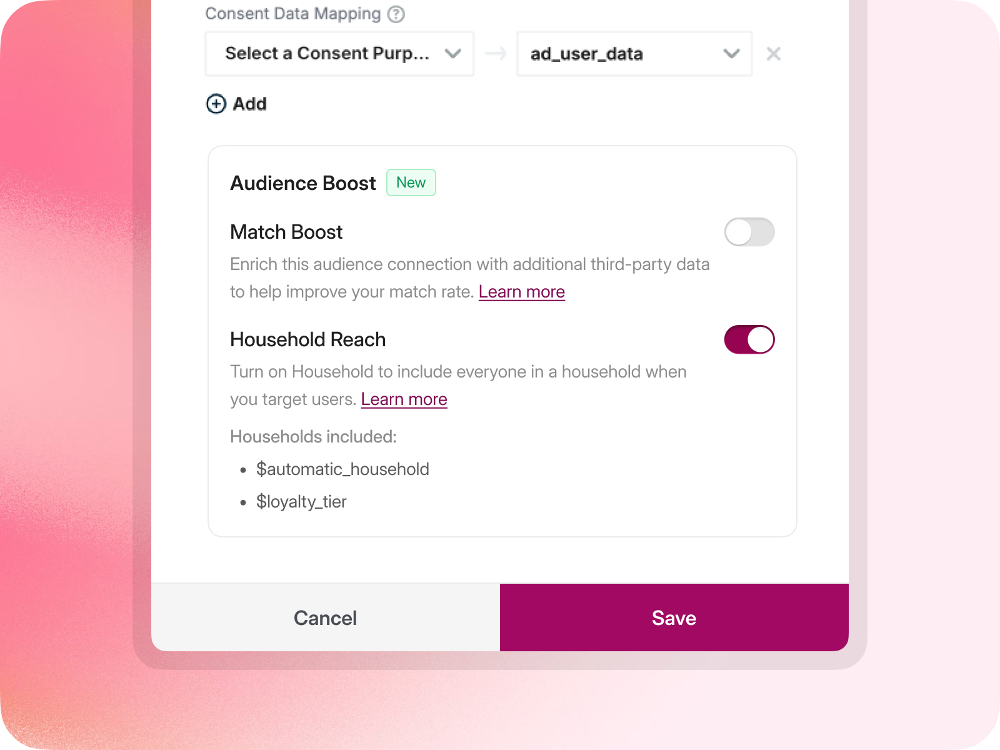
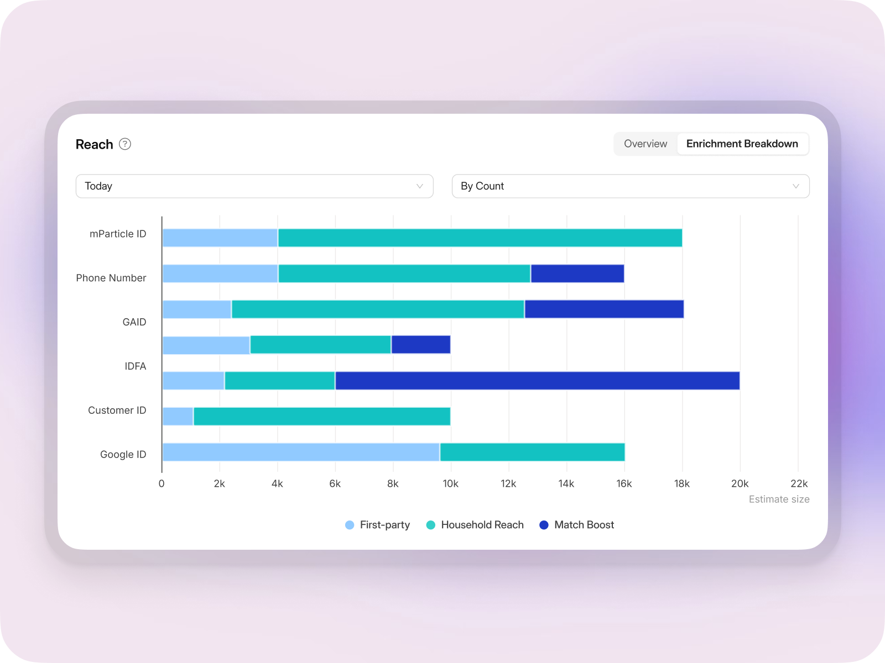

Overview
Household Reach
Most customer data platforms (CDPs) are designed around a single individual—multiple devices and multiple profiles all reconciling into a single user. However, customers do not always behave as individuals. Some buying decisions happen across families, shared accounts, and households.
I worked with Product, Engineering, GTM, and other design teams to create Household Reach, a native way for marketers to extend an audience to the relevant household members while keeping control over where the expanded audience gets used.
Product strategy, systems design, UX architecture, and cross-team alignment.
Household modeling, audience expansion, per-destination activation, and a shared expansion framework.
01 / The problem
The 1:1 model broke down when the real buyer was a household.
mParticle was primarily designed to combine fragmented customer data and resolve it into a single person. However, that 1:1 model broke down when the real buyer was a household and not an individual.
For some customers, shared accounts, families, and multiple decision-makers are the biggest influences on decision-making. Yet there was no native way to represent or activate these relationships in mParticle.
Customers worked around this limitation with warehouse SQL, custom attributes, CSV uploads, and other manual processes. The result was stale data, high engineering dependency, manual work, and fragmented targeting.
02 / Research
The whitespace was not household modeling. It was activation control.
I mapped the end-to-end workflow, studied how customers were solving the problem, and compared approaches from Hightouch, Amperity, and Salesforce Data Cloud.
Competitors could model household-like entities, but none gave marketers control over which downstream connection received the expanded household audience.
Instead of treating Household Reach as an identity feature, I made it an audience activation capability.
03 / The key product decision
Keep the original audience intact. Expand only where it makes sense.
There were two ways to build it:
That distinction mattered. A marketer might want household expansion for paid media, but not for an email campaign, warehouse export, or lifecycle message.
After working through the tradeoffs with Product, Engineering, and GTM, we chose connection-level activation. It gave customers more control, avoided duplicating audiences, reduced unnecessary compute (COGS), and created a differentiated capability that our competitors did not offer.
04 / Unification
From one feature to a shared system.
While designing Household Reach, I noticed two other product teams were solving closely related problems:
Enriched profiles before activation.
Expanded audiences to related household members.
Used AI to find additional likely customers.
They looked like separate features, but users saw them doing the same job:
Help me increase the number of valuable people I can reach.
Instead of adding three unrelated controls across the product, I worked across teams to move toward a shared audience expansion model. This became one of the most important changes in the project: moving from designing a feature to designing a system.
05 / The experience
Three jobs, one coherent workflow.
I organized the product around three jobs:
Data and marketing operations teams configure how households are formed.
Marketers choose where Household Reach should expand an audience.
Teams review coverage, manage the feature, and control its use across connections.
The final experience kept household complexity out of the marketer’s core workflow. Existing audiences could gain Household Reach without being rebuilt or duplicated.
06 / The product
Household Reach, from setup to measurement.

Make household creation fit different data models
Teams can create an automatic household from known relationships or define their own household rules when their business requires a custom model.

Expand audiences without changing the audience
Household Reach and Match Boost live at the point of activation, letting marketers choose how each audience expands without changing its original definition.

Choose expansion for each destination
Household Reach is enabled on individual audience connections, so marketers can expand reach for channels where households matter while leaving other destinations unchanged.

Show where the extra reach comes from
The enrichment breakdown separates first-party profiles from people added through Household Reach and Match Boost, giving teams visibility into how each capability increases reach.
07 / What shipped
A native household system from modeling through measurement.
- Automated HouseholdA first-class entity within mParticle’s identity system.
- Per-connection activationControl over which destinations receive expanded audiences.
- Unified performanceEnrichment and expansion capabilities brought under one model.
- Coverage and performance viewsVisibility into how household expansion was working.
08 / Key takeaways
I would frame the system earlier.
We initially approached Household Reach as its own feature. Only later did it become clear that Household Reach, Match Boost, and AI-driven expansion were different versions of the same user job.
If I were starting again, I would map those adjacent capabilities earlier and establish the shared expansion model before exploring individual feature flows.
That likely would have reduced duplicate exploration and made cross-team alignment easier sooner.